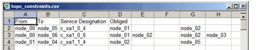

Importing and Exporting Data > Data File Formats > Topology Constraints Data Files
Topology Constraints Data Files
Topology Constraints data files are used to import/export the topology constraints for a specific traffic matrix. Topology restraints are useful when you want to force a design action (such as routing or dimensioning) route connections using specific paths, without having to specify an entire path. For more information about specifying topology constraints, see Topological Routing Constraints.
A topology constraints file expresses constraints as nodes that should or should not be present in the route of a connection. The file format and other requirements are described in Table 5-13 and Topology Constraints Files: Additional Requirements.
Figure 5-18 Topology Constraints Data File

(optional)
(optional)
Topology Constraints Files: Additional Requirements
Note the following requirements for constraints files (in addition to the requirements list in Table 5-13-Topology Constraints Data Files Format ):
- If a line does not include a "From", "To", "Obliged" or "Forbidden" field, the import engine skips that line.
- If the "To" column is defined in the header, you must specify a value for this column in at every line; if a line does not include this value, it is skipped.
- You do not need to fill in the "Obliged" or "Forbidden" columns for every connection.
- Obliged or forbidden node lists do not affect the protection type of connections. This means that you can import obliged or forbidden nodes for the protecting path of a connection, even if the protection type of the traffic matrix is set to no protection.
- You cannot change the obliged or forbidden node lists of a connection that is already groomed or accommodated in the network.
- You cannot specify a non-grooming node as an obliged node for a DCL connection.
- You cannot specify the same node as an obliged node and as a forbidden node for the same connection. For example, if a node is defined for the obliged nodes of a working path, but is already defined as a forbidden node for the same path, the node is not set as an obliged node.
| Home © 1987-2007 OPNET Technologies, Inc. All Rights Reserved. This software may be covered by one or more U.S. Patents. See complete patent notice in the Legal Notices section. OPNET Support Center |